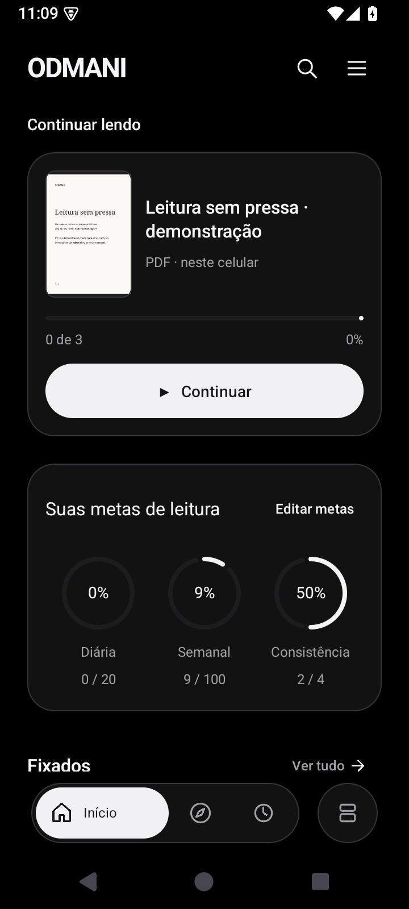
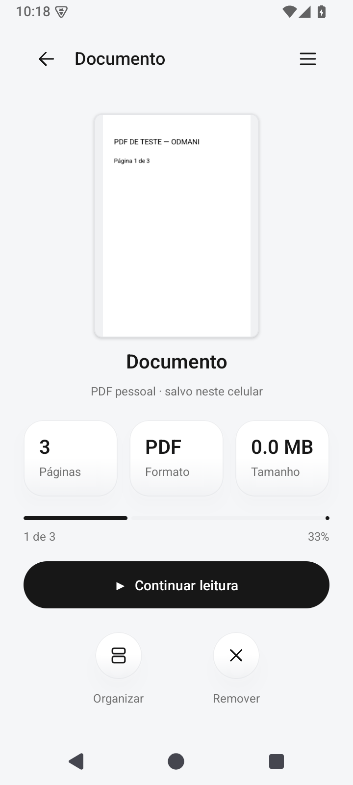
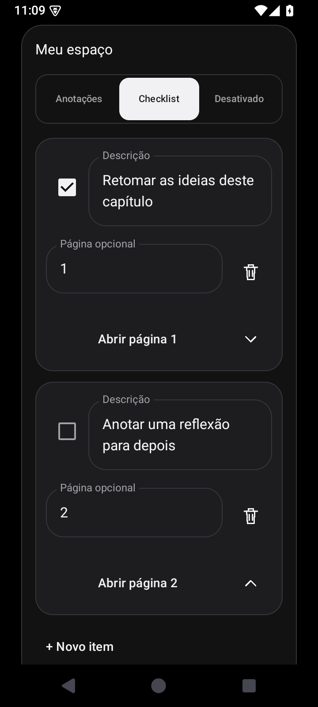
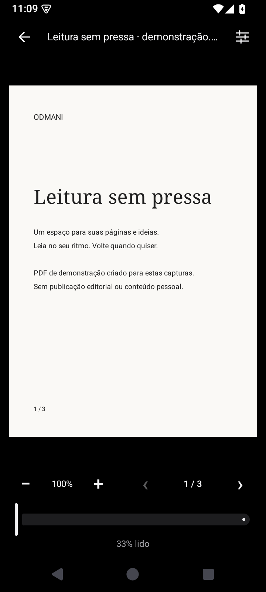
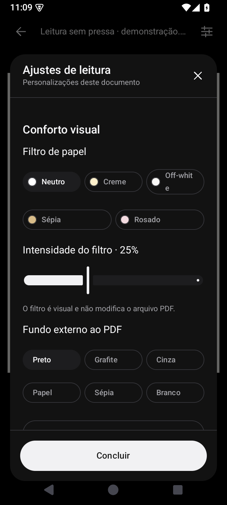
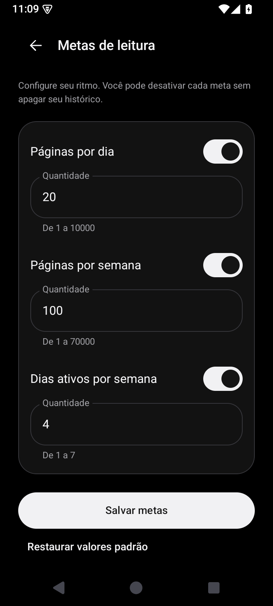
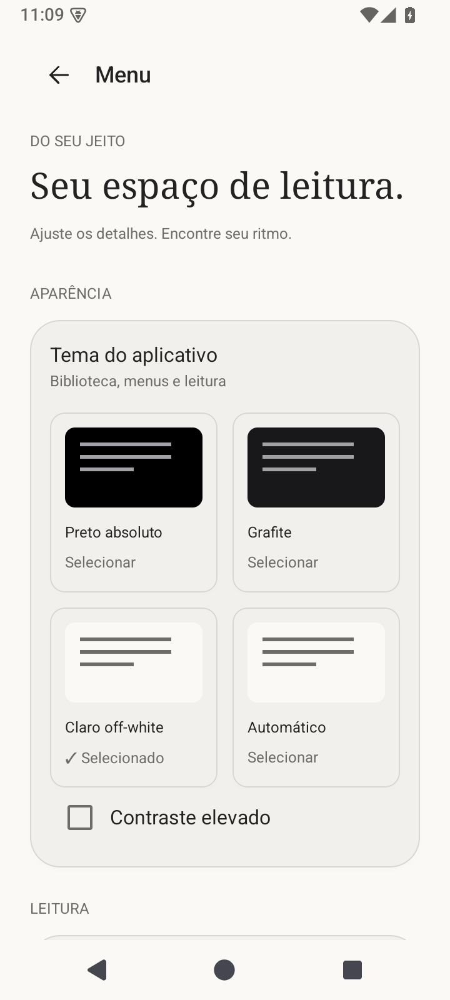

O PDF no centro.
Página única ou rolagem contínua, zoom, marcadores e ajuste de página. Um toque mostra ou oculta os controles; você decide quando trocar de página.
UM PRODUTO AUDMANI
Seus PDFs, suas ideias e o seu ritmo. Leia offline, organize seus documentos e acompanhe seus hábitos em um espaço feito para a leitura.
Baixar para AndroidAndroid 8 ou posterior · Sem conta e sem anúncios
MENOS DISTRAÇÃO. MAIS LEITURA.
A ODMANI (BETA) reúne leitura e organização em uma interface monocromática, com superfícies suaves e controles discretos. O documento continua sendo o protagonista.
Importe seus PDFs, retome a última página, fixe suas leituras e guarde anotações ou checklists por documento. Metas diárias e semanais ajudam você a construir seu próprio ritmo.
Esta é uma versão beta em evolução. Seu feedback ajuda a orientar as próximas melhorias.
DO SEU JEITO
Página única ou rolagem contínua, zoom, marcadores e ajuste de página. Um toque mostra ou oculta os controles; você decide quando trocar de página.
Pesquisa, ordenação e pastas com capas personalizadas. Um PDF pode estar em várias pastas, mantendo uma única cópia no aplicativo.
Anotações e checklist por documento, com itens editáveis e referência opcional a páginas. Alterne a visualização sem apagar suas ideias.
Configure metas de páginas e dias ativos. Acompanhe tempo, visitas e atividade real; importar um PDF não conta como leitura.
Preto absoluto, grafite, claro off-white e automático. Ajuste fundo externo, filtro de papel, brilho e orientação sem alterar o PDF original.
PDFs, progresso e preferências ficam no celular. Leia sem internet, escolha sua leitura principal e mantenha seus documentos favoritos à mão.
CAPTURAS REAIS DA VERSÃO ATUAL
Telas do APK corrigido, capturadas no Android 15. Os PDFs exibidos são documentos de demonstração criados para estas imagens.







BIBLIOTECA & PARCERIAS
A ODMANI é um aplicativo da AUDMANI, com parceria editorial da Lottan. Novas histórias estão a caminho: o catálogo editorial ainda não possui publicações disponíveis. Seus PDFs pessoais continuam em um espaço próprio.
ODMANI (BETA) PARA ANDROID
Versão 2.1.0-alpha05 · código 8
Android 8 ou posterior · 11,66 MB
Build de teste com assinatura compatível com o APK anteriormente oferecido neste site. A atualização exige a mesma assinatura da sua instalação. Evite desinstalar para preservar seus PDFs e dados locais.
APK alpha05: compilação concluída, 16 testes unitários e 32 testes em emuladores Android 8 e 15 aprovados, com inspeção visual. Assinatura e dados locais preservados. O histórico anterior não foi recalculado retroativamente. Sem teste em aparelho físico; demais versões do Android não foram reexecutadas nesta atualização.
SHA-256:
6e9703b328d97aca31e9c9bb1fcebbe2c2befa0e51745b615ee5427e1ad095b1Baixe o APK, abra o arquivo no Android e siga as instruções do sistema. Pode ser necessário permitir instalações pelo navegador. O nome no celular continua sendo ODMANI; a identificação BETA é exibida neste site.
Não há conta, sincronização ou backup completo. Desinstalar pode apagar seus dados locais. O catálogo Lottan depende de publicações oficiais; não há compra ou licença simulada.
AJUDE A MELHORAR A BETA
Encontrou um problema ou teve uma ideia? Conte para a Studio 47 o que aconteceu e como podemos melhorar.
studio.47.agencia.co@gmail.com